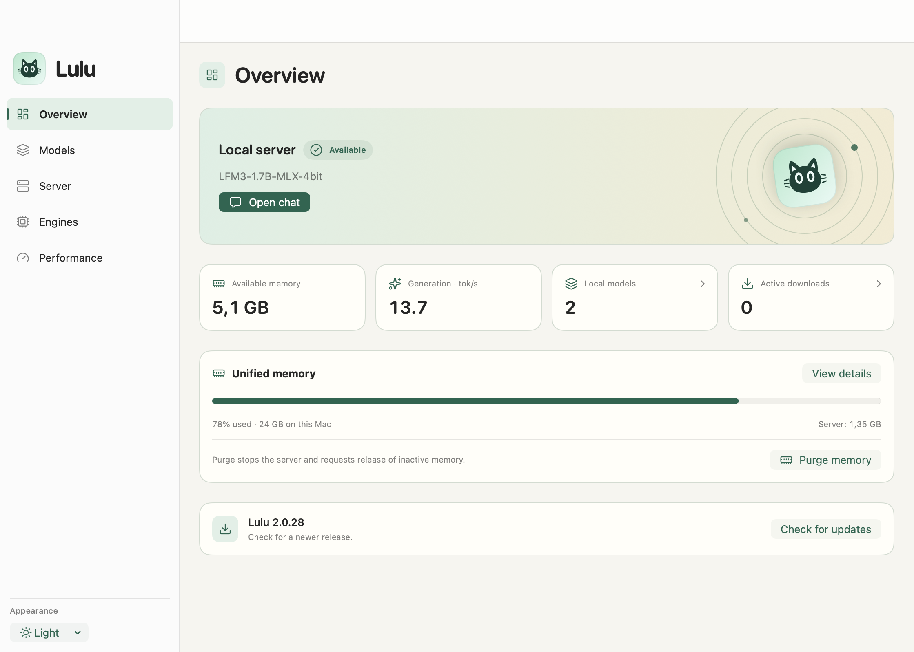
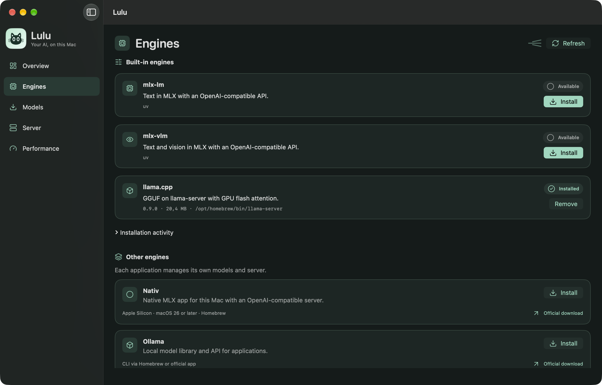

mlx-lm, mlx-vlm, llama.cpp.
Install the built-in engines, then find, download and organize MLX and GGUF models from Hugging Face. The catalog can also install Ollama, LM Studio, Jan and GPT4All. Those apps keep their own models and servers.
LIGHTWEIGHT LOCAL AI FOR MAC
Free · MIT · 3.1 MB · notarized
Lulu is a 3.1 MB native Mac app. It installs inference engines, manages MLX and GGUF models, and serves them on an OpenAI-compatible API. There is no chat in the app.
Apple Silicon 3.1 MB · Intel 3.2 MB · macOS 14 or later · v2.0.21

3.1 MB downloadNative Swift appMIT open sourceNotarized by AppleApple Silicon and Intel
SMALL BY DESIGN
Lulu does one job: get a model running on your Mac and show what that takes. llama.cpp installs through Homebrew, MLX through uv, and models live in ~/models/mlx and ~/models/gguf. The download does not include those engines.
Measured 16 Nov 2026 on an Apple M4, 24 GB, macOS 27.2.1, Lulu 2.0.21. Disk is du -sh /Applications/Lulu.app (6,700 KiB). Memory is one footprint reading of 66 MB; ps RSS was about 146 MB, which includes shared pages. LM Studio and Ollama were not measured for disk or RAM on this machine, so this page does not say Lulu uses less memory than they do. Model memory depends on the model and the context.
FROM DOWNLOAD TO THE FIRST REQUEST



http://127.0.0.1:8000/v1 or let Lulu configure your tools.Install the built-in engines, then find, download and organize MLX and GGUF models from Hugging Face. The catalog can also install Ollama, LM Studio, Jan and GPT4All. Those apps keep their own models and servers.
Serve a downloaded model on an OpenAI-compatible API that listens only on 127.0.0.1. llama.cpp requires the access key Lulu stores in Keychain. Configured clients receive that key. mlx-lm and mlx-vlm are started without it.
One click writes the local server into OpenCode, Cursor, Codex, Claude Code, Aider, Zed, Antigravity, OpenClaude and DeepSeek. mlx-lm does not serve /v1/responses or /v1/messages, and Lulu says so for Codex and Claude Code.
Purge stops the server, releases the model and asks macOS to free inactive memory. It needs an administrator password. The amount freed depends on the rest of the system.
See process memory, model weights, KV cache and context. Tokens per second show up when the engine reports them. Lulu shows a dash when a value is not available.
Prompts and responses stay on your Mac. Model search, downloads and engine installs use the network. The app does not include a chat, and it does not train models.
CONNECT YOUR TOOLS
Lulu writes the endpoint, the model name and the key into the clients below. Other providers and keys stay put. Open the client again after configuring. In Cursor, quit the app first.
Base URL: http://127.0.0.1:8000/v1
API key: lulu_••••••••
Codex uses /v1/responses and Claude Code uses /v1/messages. mlx-lm does not serve those routes. The names above are the clients Lulu can configure. Their logos are not shown here.
PRACTICAL GUIDE · LULU + OPENCODE
Run LFM3-Omni-2B through Lulu’s local server. This path uses the GGUF model and llama.cpp.
Install Lulu and OpenCode. In Engines, install llama.cpp; Lulu needs Homebrew for this. Use a recent engine version with LFM3-Omni support.
In Models, search for LiquidAI/LFM3-Omni-2B-GGUF. Select the Q4_K_M quantization and check that the mmproj file is selected too. Start the download and wait for it to finish.
In Server, select the downloaded model, start with a moderate context (for example, 8K), and click Start server. Wait until it is ready; the default port is 8000.
On the same screen, configure OpenCode in the clients section. Lulu writes the endpoint, key and model to ~/.config/opencode/opencode.json (or an existing JSONC file) and makes it the default. Restart OpenCode and run opencode in your project directory.
Ask for a small task, such as explaining a file. If it fails, check the server log, port, key and selected model; configure the client again after changing the key or model. If JSONC contains comments, Lulu may not be able to edit it: back it up and remove comments before retrying.
The model is multimodal, but audio, video and tool calls are not guaranteed to work across every llama.cpp and OpenCode combination. This guide focuses on text; agent behavior and coding quality vary. The full integration has not been tested on this Mac.
Sources: model and manufacturer instructions · OpenCode providers.
ALREADY ON THIS MAC
The engine catalog can install and open Ollama, LM Studio, Jan and GPT4All, through Homebrew or the official download. Each app keeps its own models and its own server. Opening the catalog does not install anything. Lulu does not start or remove KoboldCpp, Strata or Colibri.
COMPARE
Different tools, different jobs. Installer size is the download, not the app after setup, and not memory with a model loaded.
| Lulu | LM Studio | Ollama | |
|---|---|---|---|
| What it is | Native Mac app for engines, models and a local API. No chat. | Desktop app with Bionic, an agent for documents, code and voice. | App and runtime for open models, on this machine or in the cloud. |
| Mac installer | 3.1 MB Apple Silicon, 3.2 MB Intel | 572.5 MB, Apple Silicon build | 230.0 MB |
| Engines | mlx-lm, mlx-vlm, llama.cpp | MLX and llama.cpp | The Ollama app and command line |
| OpenAI-compatible API | Yes, on 127.0.0.1 | Yes | Yes |
| Intel Mac | Yes. GGUF with llama.cpp. | No. Apple Silicon only on Mac. | Not confirmed for this page. |
| Open source | Yes. MIT. | Not stated on the product page. | Yes. MIT. |
| Built-in chat or agent | No chat. | Yes. Bionic. | The app is a way to run models, including from the terminal. |
Installer sizes on 16 Nov 2026. Lulu v2.0.21: Apple Silicon DMG 3,125,176 bytes, Intel DMG 3,170,406 bytes, from the GitHub release. Ollama v0.40.16 Ollama.dmg: 229,996,388 bytes. Jan v0.8.8 universal DMG, not in the table: 115,908,917 bytes (115.9 MB). LM Studio 0.4.28 build 2 is the Apple Silicon build listed on lmstudio.ai/download the same day; 572.5 MB is that day's measurement of the official Mac download, and the URL is generated in the page so it was not fetched again here. Lulu's DMG does not include engines. Disk after setup and idle RAM were measured for Lulu only. Sources: lmstudio.ai, system requirements, OpenAI compatibility, ollama.com, Ollama's OpenAI compatibility, Ollama MIT license.
MEMORY
The overview bar is memory for the whole Mac, not just Lulu. Weights are file sizes. KV figures are estimates. Token rates come from the engine. A dash means the value is not available.

PRIVACY
Models are in ~/models/mlx and ~/models/gguf. Sessions and logs are in ~/.lulu/. A Hugging Face token and the server key are in macOS Keychain. The server listens on 127.0.0.1 only.
Lulu has no analytics and no crash reporter. The network is used when you search or download models, when you install an engine, and when you click Check for updates. Sparkle does not send a system profile, and it does not check in the background. Privacy.
FAQ
Yes. Lulu is free and open source under the MIT license. There is no account and no purchase in the app.
The Apple Silicon download is 3.1 MB. The app has no chat. Engines install separately through Homebrew or uv, and models take the space they need. On the Mac measured above, the app bundle is 6.5 MB on disk and the idle footprint is 66 MB. That does not include a model.
mlx-lm and mlx-vlm for MLX models, Apple Silicon only. llama.cpp for GGUF, on Apple Silicon and Intel.
llama.cpp installs through Homebrew and MLX through uv. Lulu does not install either one. If one is missing, Engines says so.
Inference runs on your Mac. Searching, downloading and installing engines need a connection.
Yes. Lulu can configure them, plus OpenCode, Aider, Zed, Antigravity, OpenClaude and DeepSeek. mlx-lm does not serve the routes Codex and Claude Code need, and Lulu says so when that engine is selected.
Use Lulu when you want a small panel for MLX and llama.cpp, a local OpenAI-compatible server, and memory details. The catalog can still install and open Ollama, LM Studio, Jan or GPT4All.
Unsloth Desktop runs and trains models, and it generates images and video. Lulu does not train. It runs and serves models.
It stops Lulu's server, releases the model and asks macOS to free inactive memory. It needs your administrator password. Nothing promises a specific amount.
Yes. Releases are signed with Developer ID and notarized by Apple. On this Mac, Lulu 2.0.21 is accepted as a Notarized Developer ID app, and the Apple Silicon DMG validates with a stapled ticket.
Nothing checks in the background. In Overview, Check for updates looks for a signed release, and Sparkle installs it. System-profile sending is off.
macOS 14 or later, Apple Silicon or Intel. MLX needs Apple Silicon. How large a model you can run depends on the Mac's memory. LM Studio's own Mac requirements are Apple Silicon only.
YOUR MAC. YOUR MODELS.
Free · MIT · 3.1 MB · macOS 14 or later